3111_Tug (Azimuth stern drive tug) – Jason Simpson
The following are the ship models distributed with Bridge Command. To add more models, please have a look at the documentation at Defining ship models.
Many thanks to the model's creators, who are credited after each model's name.
The list is split into two parts:
Own ship models, which are available as the ship you are on board during the simulation.
Other ship models, used as the surrounding shipping in scenarios.
These are available as the ship you are on board during the simulation
3111_Tug
(Azimuth stern drive tug) – Jason Simpson
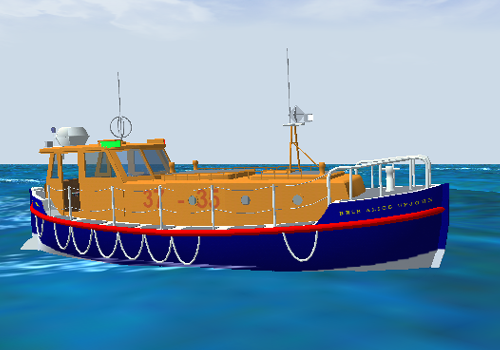
Alice
Upjohn – Simon D Richardson
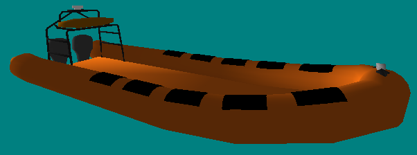
Atlantic85
– James Packer
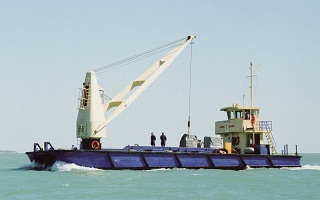
CSL_Wattle
– Jason Simpson

HMAS_Westralia
– Jason Simpson
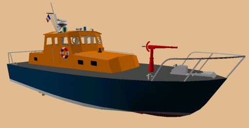
Protis
– Thierry Videlaine
ProtisSingleScrew
– Thierry Videlaine
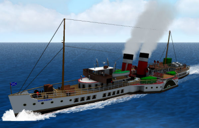
Waverley
– Simon D Richardson
These are available for use in scenarios as the surrounding shipping
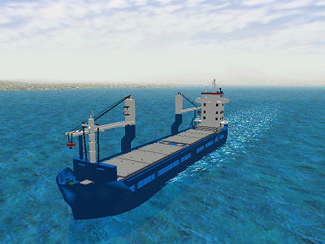
Cargoship1
– Ragnar
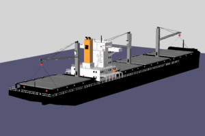
Cargoship2
– Ragnar
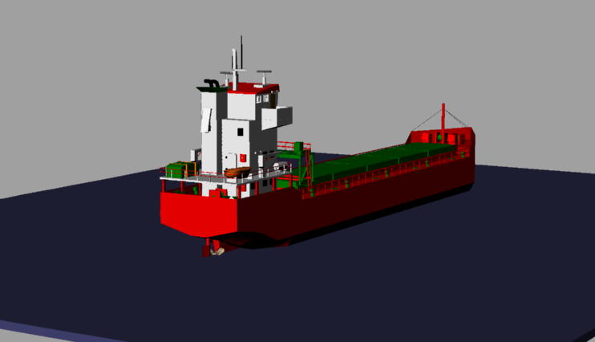
Timbercarrier
– Ragnar
3111_Tug
– Jason Simpson
CSL_Wattle
– Jason Simpson
Protis
– T. Videlaine
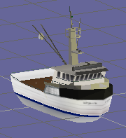
SmallTrawler
– NETC (Naval Education and Training Command)
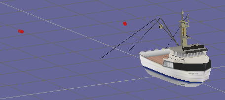
SmallTrawlerNets
– NETC (Naval Education and Training Command)
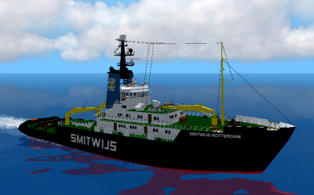
Smit_Rotterdam
– Simon D Richardson

Alkmini
– Juergen Klemp
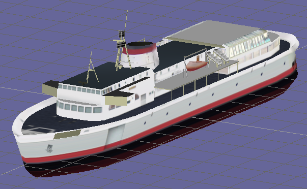
CohoFerry
– NETC (Naval Education and Training Command)
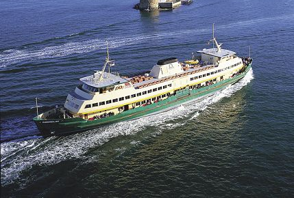
Jim_Bickhoff
– Jason Simpson
Waverley
– Simon D Richardson
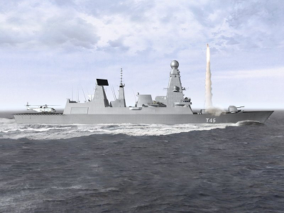
HMS_Daring
– Jason Simpson
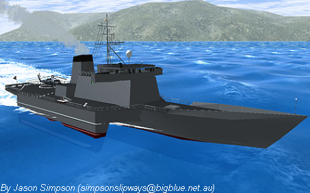
RV_Triton
– Jason Simpson
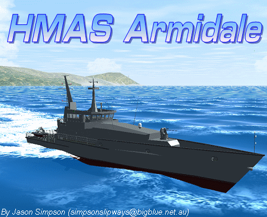
HMAS_Armidale
– Jason Simpson
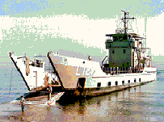
HMAS_Brunei
– Jason Simpson

HMAS_Huon – Jason Simpson
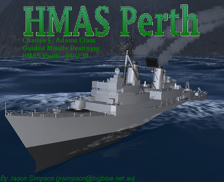
HMAS_Perth
– Jason Simpson
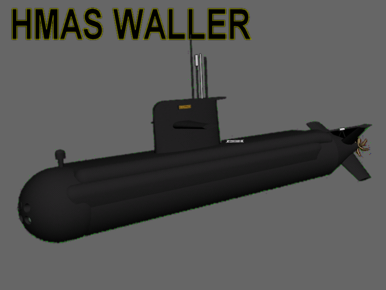
HMAS_Waller – Jason Simpson
HMAS_Westralia
– Jason Simpson
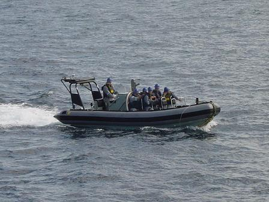
Hurricane_RHIB
– Jason Simpson

Justin
– Jason Simpson
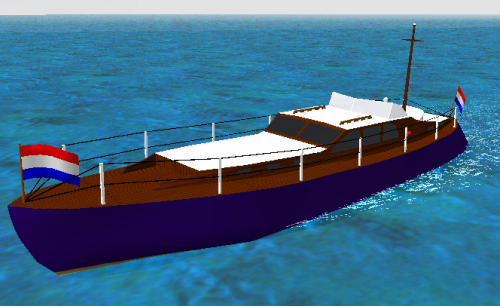
Nouveau
– Simon D Richardson

Namoh
– Juergen Klemp
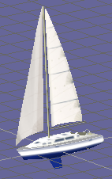
Yacht
– NETC (Naval Education and Training Command)
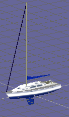
Yacht_Motoring
– NETC (Naval Education and Training Command)
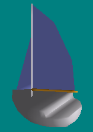
Yacht_2
Yacht_port
(Yacht on port tack) – NETC (Naval Education and Training Command)
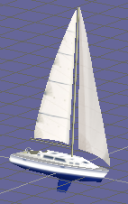
Yacht_stbd
(Yacht on starboard tack) – NETC (Naval Education and Training Command)
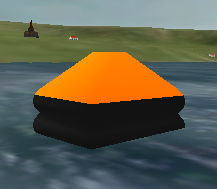
LifeRaft
– James Packer
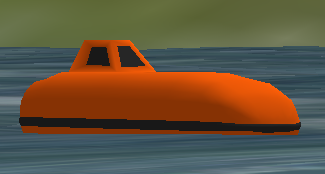
ShipsLifeboat
– James Packer
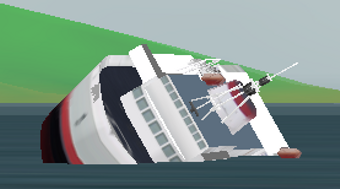
CohoFerry_Sinking
– NETC (Naval Education and Training Command)
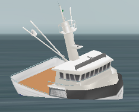
SmallTrawler_Sinking
– NETC (Naval Education and Training Command)
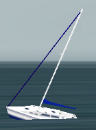
Yacht_Sinking
– NETC (Naval Education and Training Command)